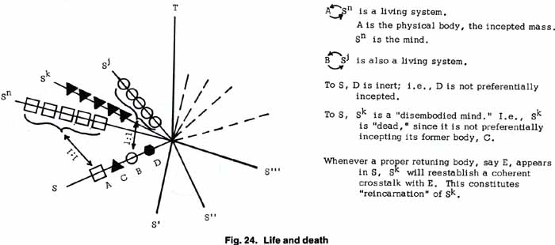
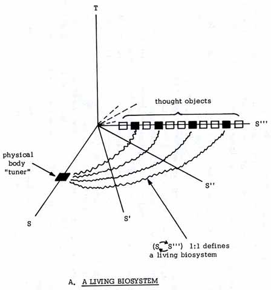
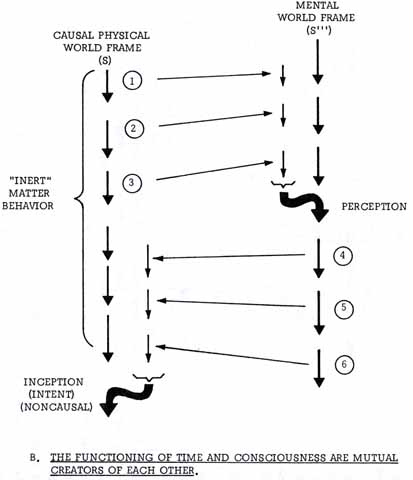
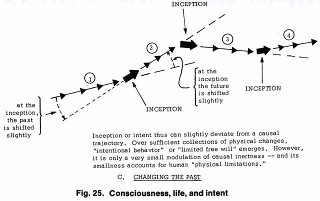

EXCALIBUR BRIEFING
LIFE AND DEATH

|
In Figure 24 I present an overall schema for life and death—and for reincarnation as well. An infinite number of hyperfields or bioframes are shown as S, S1, S2, S3, etc. The frame S is the ordinary laboratory frame—the physical spatial world we live in and observe. The frame S1 is the electromagnetic field, the frame S2 the linear or flux frame, and S3 the first “mental” or “virtual” frame. Also, all higher bioframes have a connective path to the S frame of only three orthogonal rotations (not shown). Thus only three orthogonal turns separate Sn and S, Sk and S, and Sj and S. In frame S, note that physical body A has a coherent crosstalk link with the entire frame Sn. A-Sn thus constitutes a living biological system; in this case, let us say, a human being. Likewise, B and Sj have established a coherent crosstalk loop. B-Sj thus also constitutes a living biological system; in this case, let us say, an opossum. These two examples are incarnated living systems (incarnated minds). In fact, this is a great oversimplification, as the reader will realize at once. We really should consider all the groupings of A—the organs, the structures, the cells, the internal cellular parts, etc.—as separate but coordinated ai. (And similarly with B.) Each of these ai must have a correspondent sn subworld of Sn, much like the fine structure of atomic energy levels. But here I am simply outlining the major schema. At any rate, let us now examine body C and hyperworld Sk, which formerly were one-to-one coherent in crosstalk, but are no longer so. C represents, let us suppose, the body of a frontiersman in 1830 who has received an Indian arrow in his breast, piercing the heart and destroying the ability of the body to coordinate the ci to each other and to the inceptive channel from Sk. With the loss of coherence, noise begins to destroy the channel; thus Sk is now a “disembodied mind,” and C starts to become a decaying corpse. The various ci of course lose coherence at differing rates, and so the fine structure channels to the sk also lose coherence at differing rates. Finally all ci - sk coherence is lost, and the frontiersman is then “dead.” The mind Sk is now disembodied—and also probably quite disturbed or “noisy” because of the variance in disintegration of the ci - sk loops. One might say that the mind is somewhat “detuned” by the whole affair. However, “death,” in the sense of total loss of mind and personality, has most certainly not occurred. All that has occurred is a lapse into a disembodied, and perhaps somewhat confused, state. And the disembodied mind finds itself in its own deep, unconscious world constructs. If a person has been unconsciously Christian in a very deep, fundamentalist sense, and in his own mind has also been a “sinner deserving of hell,” then he will actually “lift up his eyes in hell,” in his own world tuning. And that world will be physical and real—as real and physical as this one—but it will operate by different physical laws, just as dreams operate by different physical laws. These relations and laws are prescribed by the person, either consciously or unconsciously. The devout Mohammedan is quite likely to find himself after “death” in the delightfully chauvinistic paradise he believes in. And so the Catholic practice of praying oneself out of purgatory is relevant, for if that belief-structure is firmly fixed in the deceased's deep unconscious, then it will happen; he will simply change his world construct in accord with the effort made on his behalfAnd the ancient Tibetan practice of giving instructions to the deceased as to what to expect and where to go is also relevant, for during the time that the major channel C- Sk is lost but many of the ci - sk are still functioning, the deceased is still in contact with frame S and can heed those instructions. Certain clairvoyants and skilled psychics can also project part of their mind vision into Sk and see the status of the deceased. In some cases the deceased will have so strongly retained mental structures analogous to physical structures and localities (or persons) in frame S that continual small crosstalk channels breach open by tuning resonance to those localities, structures, or persons. With a little inceptive assistance from one or more sensitive persons, an “appearance” of the deceased at the locality, structure, or near the person can take place. Much psychic, ghost, or spiritualist activity is due to this effect. So indeed is the concept of earthbound spirits. Here again, an advanced adept can erase the psychometric pattern attached to the locality, structure, or person and thus eliminate the phenomena. In the American Association of Metascience, such a resolution is part of an overall process called “clearance.”But this is not all. Now that the departed frontiersman has been cleared, so to speak, and is snugly in his own world Sk, a rebirth process still awaits him. As I have pointed out elsewhere, every particle of mass is simply a pattern of change in the universal orthorotational flux between hyperframes. (This, after all, is no more than a slight extension to general relativity.) When the proper physical toning mechanism, say C1, again appears in the S frame, then a resonant coupling will automatically establish itself in the flux between C1 and Sk, and the disembodied, confused mind of the frontiersman will simply be coupled again to a new physical body pattern. This happens at the instant of conception, for the genetic pattern— the complete tuning pattern—is present at that instant. The coupling is quite tenuous at first, and increases in degree as the embryo develops. So reincarnation has a place in my schema. We will see, however, that it differs slightly from the classical concept, because with developmental work the frontiersman can change the makeup of Sk and thus his predisposed tuning. Changing the tuning also causes rotational displacement of Sk among the infinity of infinities of mind worlds available. Thus the past can be changed; in fact a person can change who he is the reincarnation of, simply by changing his mind tuning with enough development. Therefore more than one living person can be, for example, the reincarnation of Napoleon. And in fact the cycle of rebirth can be broken completely—simply by dying with a totally detached mental framework. The cessation of all tuning attachment results in a broadened Sk, which now is structureless, hence all-structured and part of universal Godness. But the major point is that all this can be modeled physically. And there is only life; absence from one place still leaves presence in another. Absence from any and every one place exclusively leaves presence at all places, each nonexclusively. Death, where is thy sting?  In diagram A of Figure 25, I summarize what constitutes a living biosystem. Here we can see that body (physical) changes from the biosystem's body in frame S crosstalk successively through frame S1 and S2 to S3. Also, physical changes in frame S3 actually constitute mental changes to the biosystem's body back in frame S. These mental changes must crosstalk successively into frame S2, frame S1, and then into frame S. This entire process—from frame S3 to S2 to S1 to S—is referred to as kindling. In diagram B, we observe this process a little more closely. Here, the shorter straight vertical arrows are virtual state changes kindled from the opposing frame. The longer straight vertical arrows represent observable quantized change in the particular frame, these changes being produced by ordinary inert physics laws. The curved double-lined arrows represent quantized change kindled into the frame from the coherently superposed virtual changes that have steadily been kindled there. Thus there is a kindling time delay in the causal S frame before will or intent sets of changes from the mind-frame S3 can induce an input into the physical body of the biosystem. Correspondingly, there is a kindling time delay before a perceptual change in S3 from the changes in S can occur. The horizontal arrows represent the flow or flux of kindling crosstalk between the two frames. It can be seen from this diagram that consciousness—the thread of the relation between consecutive changes in the two respective frames—and time are identical. (Recall that each inert physical change in S that is not kindled from S3 is actually randomly kindled from all the other mind-frames.) Thus time and mind are identical. Consciousness is simply the functioning of coherent cross-talk between a mind frame and a physical body in frame S. Further, each biosystem's consciousness has all other consciousnesses interwoven with it. The other living consciousnesses input into other physical bodies in frame S, and these physical bodies interact in frame S. The other dead consciousnesses input into frame S—into each body as well as into all other inert matter—in a noncoherent, randomized manner. Thus the entire universe of universes is totally in communication with each part of itself, continually.  In diagram C, I show that incepting a change from pure causality changes the past; in this case, the past is causally inferred or projected backward from the new vectorial direction. However, because inception into frame S is a very small effect, the biosystem's change of its past is so slight that normally it is not noticed. Inception of course also changes the future slightly.
|